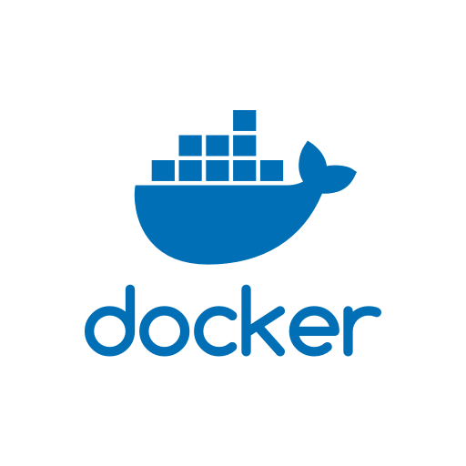

Seminario de Sistemas
Docker y Docker-Compose
Creado por Ing. Ditmar Castro Angulo
Contenido
- 1.- Que es Docker?
- 2. Como Instalar Docker
- 3. Como Instalar Docker-Compose
- 4. Levantar Node y MongoDB con docker compose
- 5. Creación de un primer servicio
- 6. Uso de Docker y comandos Básicos
Que es Docker
La idea detrás de Docker es crear contenedores ligeros y portables para las aplicaciones software que puedan ejecutarse en cualquier máquina con Docker instalado
Ejemplo
Con Docker
Estructura

Funcionamiento

Para que el contenedor funcione deberá tener las bibliotecas necesarias para la ejecución, así como ciertas dependencias, como algunas herramientas del sistema operativo.
Como Instalar Docker
Existen varias formas de instalar DOCKER.
esta tan solo es una de las muchas opciones que existen
Paso 1
sudo apt-get updateActualizamos los respositorios en este caso de UBUNTU
Como instalar Docker
Paso 2
Agregamos la llave del repositorio DOCKER
sudo apt-key adv --keyserver hkp://p80.pool.sks-keyservers.net:80 --recv-keys 58118E89F3A912897C070ADBF76221572C52609DAgregamos el Repositorio APT
sudo apt-add-repository 'deb https://apt.dockerproject.org/repo ubuntu-xenial main'Como instalar Docker
Paso 4
sudo apt-get updatesudo apt-get install -y docker-engineInstalar Docker-compose
Antes de nada que es docker-compose
Es una herramienta que ayuda a la Orquestación si vale el termino, ayuda a la administración de aplicaciones y nos ayuda a manejarlas como si de una sola unidad se tratara.
Instalar Docker-compose
Solo requiere dos archivos.
- docker-compose.yml
- Dockerfile
Instalacion
sudo curl -L https://github.com/docker/compose/releases/download/1.20.1/docker-compose-`uname -s`-`uname -m` -o /usr/local/bin/docker-composesudo chmod +x /usr/local/bin/docker-composeMontar Una Arquitectura DOCKER, con docker-compose
Que vamos hacer, montaremos una arquitectura completa de desarrollo Montando una base de datos MONGO DB y NODEJS como servidor de aplicacion.
Ejemplo y Caso de USO
Usaremos el contenedor de
Fork de Albert MunozComandos
Lista los servicios que estan corriendo
docker psdocker ps -aLevanta un contendor entero
docker-compose up -ddocker-compose upComandos
Para el servidor
docker-compose stopdocker-compose restart {name}Se puede ver los detalles del contenedor
docker inspect {id}Es posible ingresar al contendor
docker exec -it {id} bashComandos
Muestra todas las imagenes descargadas por docker
docker imagesBorra cualquier imagen que requieras
docker rmi IMAGEN-IDFIN
Export to PDF
Presentations can be exported to PDF, here's an example: